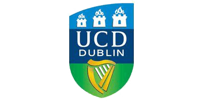
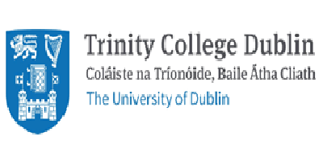
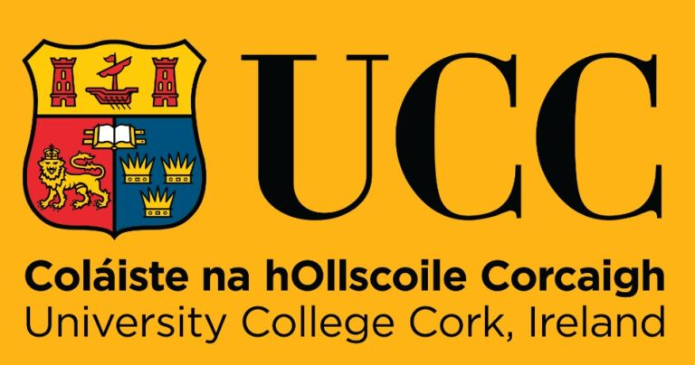
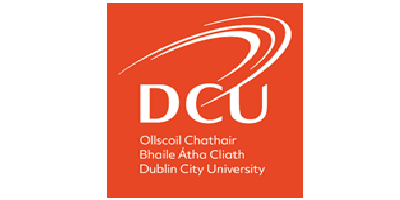
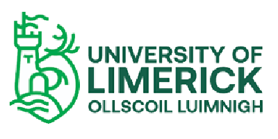

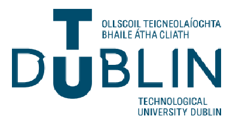
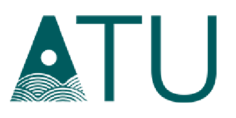
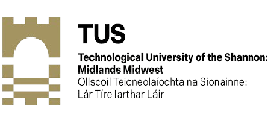
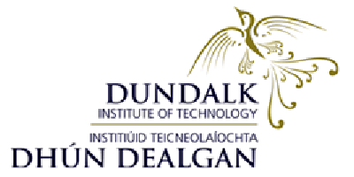
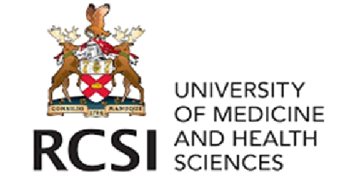
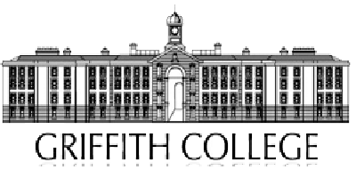
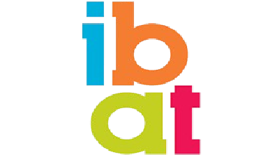
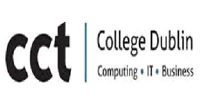
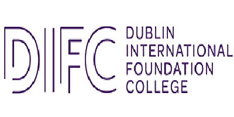















Explore undergraduate and postgraduate programmes at Ireland's leading universities and colleges
We negotiate the best offer tailored to your profile and budget
Click on any institution to view the full list of undergraduate and postgraduate programmes available.
Ireland's largest university and a member of the prestigious Research Universities Ireland network, offering over 500 programmes across all disciplines.
| Programme Highlights | |
|---|---|
| 🎓 Bachelor's | Arts, Science, Commerce, Engineering, Law, Medicine |
| 🎓 Master's | MBA, MSc Data Analytics, LLM, MA International Relations |
| 📅 Duration | 3–4 yrs (UG) | 1–2 yrs (PG) |
| 💶 Fees (non-EU) | From €18,000/yr |
Ireland's oldest university and consistently ranked among the world's top 100, renowned for research excellence and historic campus in the heart of Dublin.
| Programme Highlights | |
|---|---|
| 🎓 Bachelor's | Computer Science, Law, Medicine, Business, Arts |
| 🎓 Master's | MSc Computer Science, MBA, LLM, MA Global Affairs |
| 📅 Duration | 3–4 yrs (UG) | 1–2 yrs (PG) |
| 💶 Fees (non-EU) | From €20,000/yr |
A world-class research university in the heart of Cork, offering a wide range of programmes with a strong focus on sustainability and innovation.
| Programme Highlights | |
|---|---|
| 🎓 Bachelor's | Pharmacy, Engineering, Arts, Science, Law, Food Science |
| 🎓 Master's | MSc Sustainable Energy, MBA, LLM, MA Film Studies |
| 📅 Duration | 3–4 yrs (UG) | 1–2 yrs (PG) |
| 💶 Fees (non-EU) | From €15,500/yr |
A young, dynamic university with a strong focus on technology, business and communications, known for its industry partnerships and high graduate employment rates.
| Programme Highlights | |
|---|---|
| 🎓 Bachelor's | Computing, Business, Journalism, Biotechnology, Education |
| 🎓 Master's | MSc AI, MBA, MA Journalism, MSc Biotechnology |
| 📅 Duration | 3–4 yrs (UG) | 1–2 yrs (PG) |
| 💶 Fees (non-EU) | From €14,500/yr |
Renowned for its cooperative education model, UL offers students real-world work placements integrated into their degree programmes.
| Programme Highlights | |
|---|---|
| 🎓 Bachelor's | Engineering, Business, Sports Science, Nursing, Law |
| 🎓 Master's | MBA, MSc Finance, MA Education, MSc Engineering |
| 📅 Duration | 4 yrs (UG, incl. co-op) | 1–2 yrs (PG) |
| 💶 Fees (non-EU) | From €14,000/yr |
A vibrant campus university 25 km from Dublin, celebrated for its humanities, social sciences and computer science programmes.
| Programme Highlights | |
|---|---|
| 🎓 Bachelor's | Arts, Computer Science, Law, Mathematics, Psychology |
| 🎓 Master's | MA Philosophy, MSc Computer Science, LLM, MA Sociology |
| 📅 Duration | 3–4 yrs (UG) | 1–2 yrs (PG) |
| 💶 Fees (non-EU) | From €13,500/yr |
Located in one of Ireland's most vibrant cities, the University of Galway is a leading research institution with a strong international community.
| Programme Highlights | |
|---|---|
| 🎓 Bachelor's | Medicine, Law, Engineering, Arts, Science, Commerce |
| 🎓 Master's | MSc Marine Science, MBA, LLM, MA Irish Studies |
| 📅 Duration | 3–4 yrs (UG) | 1–2 yrs (PG) |
| 💶 Fees (non-EU) | From €14,500/yr |
Ireland's first technological university, offering a broad range of applied and professional programmes across science, technology, business and the arts.
| Programme Highlights | |
|---|---|
| 🎓 Bachelor's | Computing, Architecture, Tourism, Business, Engineering |
| 🎓 Master's | MSc Data Science, MBA, MA Design, MSc Environmental Science |
| 📅 Duration | 3–4 yrs (UG) | 1–2 yrs (PG) |
| 💶 Fees (non-EU) | From €12,000/yr |
A multi-campus technological university serving the west and north-west of Ireland, with strong links to regional industry and enterprise.
| Programme Highlights | |
|---|---|
| 🎓 Bachelor's | Engineering, Nursing, Business, Computing, Science |
| 🎓 Master's | MSc Cybersecurity, MBA, MSc Renewable Energy, MA Education |
| 📅 Duration | 3–4 yrs (UG) | 1–2 yrs (PG) |
| 💶 Fees (non-EU) | From €11,500/yr |
MTU combines the strengths of Cork IT and IT Tralee to deliver applied programmes with a strong focus on industry collaboration and innovation.
| Programme Highlights | |
|---|---|
| 🎓 Bachelor's | Computing, Engineering, Business, Science, Arts |
| 🎓 Master's | MSc Software Development, MBA, MSc Cybersecurity |
| 📅 Duration | 3–4 yrs (UG) | 1–2 yrs (PG) |
| 💶 Fees (non-EU) | From €11,000/yr |
SETU serves the south-east of Ireland with a wide portfolio of applied programmes and a growing research profile in health, engineering and business.
| Programme Highlights | |
|---|---|
| 🎓 Bachelor's | Nursing, Engineering, Business, Computing, Science |
| 🎓 Master's | MSc Health Informatics, MBA, MSc Engineering Management |
| 📅 Duration | 3–4 yrs (UG) | 1–2 yrs (PG) |
| 💶 Fees (non-EU) | From €11,000/yr |
TUS is Ireland's midlands and midwest technological university, offering career-focused programmes with strong industry connections across the Shannon region.
| Programme Highlights | |
|---|---|
| 🎓 Bachelor's | Engineering, Business, Computing, Science, Arts |
| 🎓 Master's | MSc Data Science, MBA, MSc Mechanical Engineering |
| 📅 Duration | 3–4 yrs (UG) | 1–2 yrs (PG) |
| 💶 Fees (non-EU) | From €11,000/yr |
DkIT is a leading institute of technology in the north-east of Ireland, with strong links to the cross-border economy and a focus on applied learning.
| Programme Highlights | |
|---|---|
| 🎓 Bachelor's | Computing, Business, Engineering, Nursing, Sport |
| 🎓 Master's | MSc Computing, MBA, MSc Engineering, MA Education |
| 📅 Duration | 3–4 yrs (UG) | 1–2 yrs (PG) |
| 💶 Fees (non-EU) | From €10,500/yr |
One of the world's leading health sciences universities, RCSI is consistently ranked in the top 250 globally and is dedicated entirely to health and medicine.
| Programme Highlights | |
|---|---|
| 🎓 Bachelor's | Medicine, Pharmacy, Physiotherapy, Nursing, Radiography |
| 🎓 Master's | MSc Surgical Sciences, MSc Nursing, MSc Healthcare Management |
| 📅 Duration | 5–6 yrs (UG Medicine) | 1–2 yrs (PG) |
| 💶 Fees (non-EU) | From €25,000/yr |
Ireland's largest independent third-level college, offering a wide range of programmes in business, law, journalism, design and computing.
| Programme Highlights | |
|---|---|
| 🎓 Bachelor's | Business, Law, Journalism, Computing, Design |
| 🎓 Master's | MBA, LLM, MA Journalism, MSc Computing |
| 📅 Duration | 3–4 yrs (UG) | 1–2 yrs (PG) |
| 💶 Fees (non-EU) | From €12,000/yr |
DBS is one of Ireland's largest private colleges, specialising in business, law, arts and psychology with a strong focus on professional development.
| Programme Highlights | |
|---|---|
| 🎓 Bachelor's | Business, Law, Psychology, Marketing, Accounting |
| 🎓 Master's | MBA, LLM, MSc Psychology, MA Human Resource Management |
| 📅 Duration | 3–4 yrs (UG) | 1–2 yrs (PG) |
| 💶 Fees (non-EU) | From €11,500/yr |
Located in Dublin's financial district, NCI specialises in business, computing and human resources, with a strong emphasis on lifelong learning.
| Programme Highlights | |
|---|---|
| 🎓 Bachelor's | Business, Computing, Human Resources, Finance |
| 🎓 Master's | MSc Data Analytics, MBA, MSc HRM, MSc FinTech |
| 📅 Duration | 3–4 yrs (UG) | 1–2 yrs (PG) |
| 💶 Fees (non-EU) | From €10,500/yr |
A modern private college in the heart of Dublin, offering flexible business and technology programmes designed for working professionals and international students.
| Programme Highlights | |
|---|---|
| 🎓 Bachelor's | Business, Computing, Accounting, Marketing |
| 🎓 Master's | MBA, MSc Computing, MSc Project Management |
| 📅 Duration | 3–4 yrs (UG) | 1–2 yrs (PG) |
| 💶 Fees (non-EU) | From €10,000/yr |
CCT specialises in technology and business programmes, offering a highly international campus environment with strong pathways to employment in Ireland's tech sector.
| Programme Highlights | |
|---|---|
| 🎓 Bachelor's | Computing, Business, Cybersecurity, Data Science |
| 🎓 Master's | MSc Cybersecurity, MBA, MSc Cloud Computing, MSc AI |
| 📅 Duration | 3–4 yrs (UG) | 1–2 yrs (PG) |
| 💶 Fees (non-EU) | From €10,500/yr |
DIFC provides foundation and undergraduate programmes that serve as pathways into Ireland's leading universities, with a focus on international student support.
| Programme Highlights | |
|---|---|
| 🎓 Bachelor's | Business, Computing, Foundation Year Programmes |
| 🎓 Master's | MBA, MSc Business Analytics |
| 📅 Duration | 3–4 yrs (UG) | 1 yr (PG) |
| 💶 Fees (non-EU) | From €9,500/yr |
Dorset College offers a range of business and computing programmes in a welcoming environment, with a strong track record of student progression to top universities.
| Programme Highlights | |
|---|---|
| 🎓 Bachelor's | Business, Computing, Marketing, Accounting |
| 🎓 Master's | MBA, MSc Computing, MSc Business Management |
| 📅 Duration | 3–4 yrs (UG) | 1–2 yrs (PG) |
| 💶 Fees (non-EU) | From €9,500/yr |
A boutique private college offering specialised programmes in psychology, counselling, business and social sciences in a supportive, student-centred environment.
| Programme Highlights | |
|---|---|
| 🎓 Bachelor's | Psychology, Counselling, Business, Social Science |
| 🎓 Master's | MSc Psychology, MA Counselling, MBA |
| 📅 Duration | 3–4 yrs (UG) | 1–2 yrs (PG) |
| 💶 Fees (non-EU) | From €10,000/yr |
ICD Business School focuses exclusively on business and management education, offering internationally recognised qualifications with a strong emphasis on entrepreneurship.
| Programme Highlights | |
|---|---|
| 🎓 Bachelor's | Business, Entrepreneurship, Marketing, Finance |
| 🎓 Master's | MBA, MSc International Business, MSc Marketing |
| 📅 Duration | 3–4 yrs (UG) | 1–2 yrs (PG) |
| 💶 Fees (non-EU) | From €10,000/yr |
City Education Group offers a diverse portfolio of undergraduate and postgraduate programmes across business, hospitality, computing and social sciences.
| Programme Highlights | |
|---|---|
| 🎓 Bachelor's | Business, Hospitality, Computing, Social Care |
| 🎓 Master's | MBA, MSc Hospitality Management, MSc Computing |
| 📅 Duration | 3–4 yrs (UG) | 1–2 yrs (PG) |
| 💶 Fees (non-EU) | From €9,500/yr |
Holmes Institute offers Australian-accredited business and computing programmes in Dublin, providing students with internationally recognised qualifications.
| Programme Highlights | |
|---|---|
| 🎓 Bachelor's | Business, Computing, Information Technology |
| 🎓 Master's | MBA, MSc IT, MSc Business Administration |
| 📅 Duration | 3 yrs (UG) | 1–2 yrs (PG) |
| 💶 Fees (non-EU) | From €10,000/yr |
Galway Business School offers affordable, flexible business and computing programmes in the vibrant city of Galway, with strong links to the local tech and pharma industries.
| Programme Highlights | |
|---|---|
| 🎓 Bachelor's | Business, Computing, Accounting, Marketing |
| 🎓 Master's | MBA, MSc Business Computing, MSc Management |
| 📅 Duration | 3–4 yrs (UG) | 1–2 yrs (PG) |
| 💶 Fees (non-EU) | From €9,000/yr |
A world-renowned specialist college affiliated with NUI Galway, offering elite hospitality and hotel management programmes with guaranteed international internships.
| Programme Highlights | |
|---|---|
| 🎓 Bachelor's | Hotel Management, International Hospitality Management |
| 🎓 Master's | MSc International Hospitality Management, MBA (Hospitality) |
| 📅 Duration | 4 yrs (UG, incl. internship) | 1–2 yrs (PG) |
| 💶 Fees (non-EU) | From €15,000/yr |